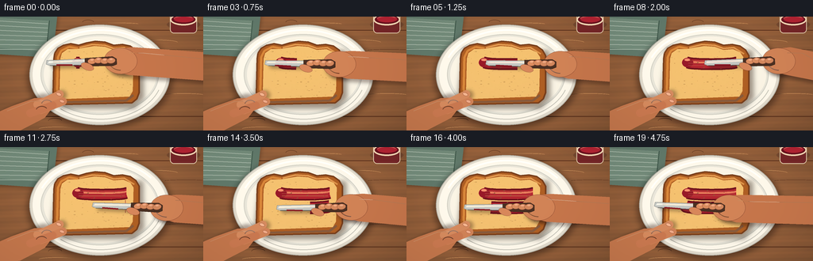
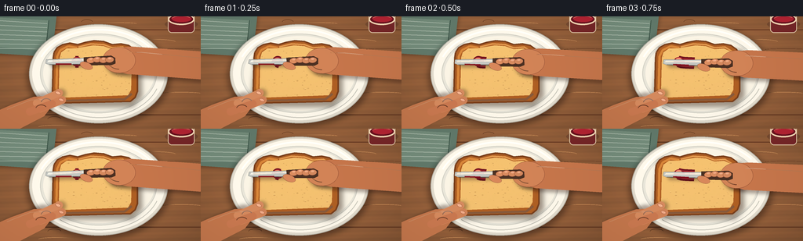

CODING AGENTS AS PIXEL WORLD MODELS
traex/GPT-5.6-Sol · motion_rationality_0019
点击播放 · 原生 RGB 像素
逐轮保存的候选
回放视频、检查图与代码变化。
每份候选均可单独播放。实际图片检查记录在下方工具轨迹中。
候选 01播放与检查图
点击播放 · 原生 RGB 像素


展开代码变化
--- 上一保存版本
+++ 本次保存版本
@@ -0,0 +1,301 @@
+from pathlib import Path
+import math
+import numpy as np
+from PIL import Image, ImageDraw, ImageFilter
+import cv2
+import artifact_io
+
+# Deterministic, hand-illustrated 2D animation rendered at 4x resolution.
+W, H, N, S = 256, 144, 20, 4
+RW, RH = W*S, H*S
+rng = np.random.default_rng(1907)
+
+def sp(points):
+ return [(int(x*S), int(y*S)) for x,y in points]
+
+def box(b):
+ return tuple(int(v*S) for v in b)
+
+def rgba_layer():
+ return Image.new('RGBA', (RW, RH), (0,0,0,0))
+
+def composite(base, layer):
+ return Image.alpha_composite(base, layer)
+
+def soft_shape(points, fill, blur, ellipse=False):
+ lay = rgba_layer(); d = ImageDraw.Draw(lay)
+ if ellipse: d.ellipse(box(points), fill=fill)
+ else: d.polygon(sp(points), fill=fill)
+ return lay.filter(ImageFilter.GaussianBlur(blur*S))
+
+def capsule(draw, p0, p1, width, fill, outline=None, ow=1):
+ p0s=(int(p0[0]*S),int(p0[1]*S)); p1s=(int(p1[0]*S),int(p1[1]*S)); w=max(1,int(width*S))
+ draw.line([p0s,p1s], fill=fill, width=w)
+ r=w//2
+ draw.ellipse((p0s[0]-r,p0s[1]-r,p0s[0]+r,p0s[1]+r), fill=fill)
+ draw.ellipse((p1s[0]-r,p1s[1]-r,p1s[0]+r,p1s[1]+r), fill=fill)
+ if outline:
+ draw.line([p0s,p1s], fill=outline, width=w+int(2*ow*S))
+ draw.line([p0s,p1s], fill=fill, width=w)
+
+def ellipse_rot(layer, center, size, angle, fill, outline=None, width=1):
+ # Draw in a small transparent tile then rotate, preserving antialiasing from supersampling.
+ ww,hh=int(size[0]*S+8*S),int(size[1]*S+8*S)
+ tile=Image.new('RGBA',(ww,hh),(0,0,0,0)); d=ImageDraw.Draw(tile)
+ pad=4*S
+ d.ellipse((pad,pad,ww-pad,hh-pad),fill=fill,outline=outline,width=max(1,int(width*S)))
+ tile=tile.rotate(angle, resample=Image.Resampling.BICUBIC, expand=True)
+ layer.alpha_composite(tile,(int(center[0]*S-tile.width/2),int(center[1]*S-tile.height/2)))
+
+# Curved toast silhouette, shared by all frames.
+bread_outer = [(70,105),(67,96),(68,53),(69,46),(73,40),(80,36),(89,34),
+ (99,36),(109,33),(120,31),(132,32),(143,36),(154,35),(164,37),
+ (171,42),(175,49),(175,96),(172,104),(166,109),(81,111),(74,109)]
+bread_inner = [(77,101),(75,94),(76,53),(78,46),(85,41),(96,41),(107,39),(119,37),
+ (132,38),(143,42),(155,41),(164,45),(168,51),(167,94),(163,101),(83,104)]
+
+# Fixed tabletop: warm walnut with directional grain and subtle vignette.
+yy,xx=np.mgrid[0:RH,0:RW]
+x=xx/S; y=yy/S
+base=np.zeros((RH,RW,4),dtype=np.uint8)
+light=1.0 - 0.16*((x-123)**2/(170**2)+(y-65)**2/(115**2))
+grain=4.2*np.sin(y*0.38 + 1.1*np.sin(x*.035)) + 2.2*np.sin(y*1.24+x*.025)
+noise=cv2.GaussianBlur(rng.normal(0,1.7,(RH,RW)).astype(np.float32),(0,0),2.2*S)
+base[...,0]=np.clip((151+grain+noise)*light,0,255)
+base[...,1]=np.clip((99+grain*.55+noise)*light,0,255)
+base[...,2]=np.clip((62+grain*.25+noise*.5)*light,0,255)
+base[...,3]=255
+TABLE=Image.fromarray(base,'RGBA')
+# Fixed scene behind the food.
+fixed=TABLE.copy(); d=ImageDraw.Draw(fixed)
+# board seams and grain scratches
+for gy in (17,126):
+ d.line([(0,gy*S),(RW,gy*S)],fill=(88,48,28,80),width=S)
+for i in range(22):
+ y0=float(rng.uniform(3,141)); x0=float(rng.uniform(0,210)); leng=float(rng.uniform(12,58))
+ col=(91,52,31,45) if i%2 else (210,151,96,35)
+ d.arc(box((x0,y0,x0+leng,y0+rng.uniform(2,7))),180,355,fill=col,width=max(1,S//2))
+# folded sage napkin in the upper-left, safely behind plate
+nap_shadow=soft_shape([(-12,-4),(72,0),(65,54),(-8,48)],(28,22,16,95),3)
+fixed=composite(fixed,nap_shadow)
+d=ImageDraw.Draw(fixed)
+d.polygon(sp([(-11,-8),(72,-1),(66,52),(-8,47)]),fill=(94,119,106,255))
+d.polygon(sp([(-10,1),(62,5),(58,44),(-7,39)]),fill=(112,137,122,255))
+for k in range(7):
+ d.line(sp([(-4,5+k*6),(60,9+k*5.4)]),fill=(165,183,170,80),width=1*S)
+d.line(sp([(62,5),(58,44)]),fill=(59,84,72,135),width=S)
+# plate shadow
+fixed=composite(fixed,soft_shape((35,13,217,141),(35,19,11,125),4,ellipse=True))
+d=ImageDraw.Draw(fixed)
+d.ellipse(box((37,10,214,137)),fill=(219,216,205,255),outline=(178,177,168,255),width=1*S)
+d.ellipse(box((41,13,210,133)),fill=(248,246,236,255))
+d.ellipse(box((51,22,200,124)),fill=(226,226,217,255),outline=(204,205,197,255),width=S)
+d.ellipse(box((55,25,197,121)),fill=(244,241,229,255))
+# Ceramic highlight arcs
+d.arc(box((46,16,207,129)),202,323,fill=(255,255,252,205),width=2*S)
+d.arc(box((48,17,205,130)),20,130,fill=(194,194,186,130),width=S)
+# toast drop shadow
+fixed=composite(fixed,soft_shape([(72,39),(180,43),(181,103),(169,116),(76,116),(64,103)],(49,29,15,115),3))
+# crust
+crust=rgba_layer(); cd=ImageDraw.Draw(crust)
+cd.polygon(sp(bread_outer),fill=(169,93,35,255))
+cd.line(sp(bread_outer+[bread_outer[0]]),fill=(117,62,28,255),width=2*S,joint='curve')
+# crust warm highlight / imperfect baking marks
+cd.line(sp([(75,102),(72,92),(73,51),(77,43),(87,38),(98,40)]),fill=(210,133,58,255),width=3*S)
+cd.line(sp([(100,39),(116,35),(132,36),(143,40),(156,39),(169,47)]),fill=(220,145,66,230),width=2*S)
+cd.line(sp([(82,108),(159,106),(168,99)]),fill=(122,64,28,180),width=3*S)
+fixed=composite(fixed,crust)
+# crumb gradient clipped to inner bread mask
+mask=Image.new('L',(RW,RH),0); md=ImageDraw.Draw(mask); md.polygon(sp(bread_inner),fill=255)
+crumb=np.zeros((RH,RW,4),dtype=np.uint8)
+crumb_noise=cv2.GaussianBlur(rng.normal(0,2.8,(RH,RW)).astype(np.float32),(0,0),.8*S)
+crumb[...,0]=np.clip(237 + crumb_noise + (52-y)*.025,0,255)
+crumb[...,1]=np.clip(190 + crumb_noise*.65 + (52-y)*.02,0,255)
+crumb[...,2]=np.clip(112 + crumb_noise*.35,0,255)
+crumb[...,3]=np.array(mask)
+fixed=composite(fixed,Image.fromarray(crumb,'RGBA'))
+# crumb mottling and pores, fixed positions
+texture=rgba_layer(); td=ImageDraw.Draw(texture)
+for i in range(90):
+ px=float(rng.uniform(78,166)); py=float(rng.uniform(41,102))
+ # only place if inside mask
+ if np.asarray(mask)[int(py*S),int(px*S)]>0:
+ r=float(rng.uniform(.25,1.15)); a=int(rng.uniform(18,58))
+ td.ellipse(box((px-r,py-r*.65,px+r,py+r*.65)),fill=(107,67,28,a))
+for i in range(18):
+ px=float(rng.uniform(82,162)); py=float(rng.uniform(44,99)); r=float(rng.uniform(.5,1.5))
+ if np.asarray(mask)[int(py*S),int(px*S)]>0:
+ td.ellipse(box((px-r,py-r*.55,px+r,py+r*.55)),fill=(118,69,24,65))
+ td.arc(box((px-r,py-r*.55,px+r,py+r*.55)),190,345,fill=(255,226,157,100),width=max(1,S//2))
+texture.putalpha(Image.composite(texture.getchannel('A'),Image.new('L',(RW,RH),0),mask))
+fixed=composite(fixed,texture)
+# Little open jam jar at the far upper-right establishes the ingredient without blocking action.
+jar=rgba_layer(); jd=ImageDraw.Draw(jar)
+jd.ellipse(box((210,4,252,16)),fill=(58,31,29,70))
+jd.rounded_rectangle(box((214,-8,248,21)),radius=5*S,fill=(113,35,39,240),outline=(226,207,179,235),width=S)
+jd.ellipse(box((214,-4,248,11)),fill=(103,18,31,255),outline=(239,216,183,255),width=2*S)
+jd.ellipse(box((219,-1,244,7)),fill=(175,35,51,255))
+jd.arc(box((218,-1,244,8)),200,330,fill=(245,103,111,170),width=S)
+fixed=composite(fixed,jar)
+
+# Fixed left hand that steadies the toast.
+def add_left_hand(im, f):
+ # minute muscular settling, not a sliding/disconnected hand
+ dy=.35*math.sin(f*.48)
+ shadow=rgba_layer(); sd=ImageDraw.Draw(shadow)
+ capsule(sd,(-9,139+dy),(55,111+dy),27,(53,25,16,105))
+ capsule(sd,(45,115+dy),(78,99+dy),12,(53,25,16,95))
+ shadow=shadow.filter(ImageFilter.GaussianBlur(2.2*S)); im=composite(im,shadow)
+ hand=rgba_layer(); hd=ImageDraw.Draw(hand)
+ hd.polygon(sp([(-8,123+dy),(15,113+dy),(43,103+dy),(59,102+dy),(69,111+dy),(56,128+dy),(25,144+dy),(-8,148+dy)]),fill=(190,117,76,255))
+ # fingers curve around the bottom left edge of bread
+ capsule(hd,(47,111+dy),(75,98+dy),10,(207,136,94,255))
+ capsule(hd,(51,118+dy),(79,107+dy),10,(202,128,87,255))
+ capsule(hd,(38,122+dy),(66,112+dy),10,(196,119,80,255))
+ # warm lit ridges and subtle joint creases
+ hd.line(sp([(9,119+dy),(39,107+dy),(56,106+dy)]),fill=(231,164,121,180),width=S)
+ hd.arc(box((52,105+dy,66,116+dy)),190,330,fill=(128,72,50,130),width=S)
+ hd.arc(box((45,113+dy,60,124+dy)),195,330,fill=(128,72,50,110),width=S)
+ # fingernails at contact points
+ ellipse_rot(hand,(74,98+dy),(7,4),-23,(237,177,143,255),(158,91,69,170),.5)
+ ellipse_rot(hand,(78,107+dy),(6.5,3.8),-20,(232,168,136,255),(151,84,64,150),.5)
+ return composite(im,hand)
+
+def ease(q):
+ return q*q*(3-2*q)
+
+def motion(f):
+ if f <= 8:
+ q=ease(f/8)
+ return (98+61*q, 58+2.0*math.sin(q*math.pi), -2+3*math.sin(q*math.pi), 0)
+ if f <= 10:
+ q=(f-8)/2
+ # short, visible lifted repositioning arc
+ return (159-1*q, 59+15*q, -2-5*math.sin(q*math.pi), 1)
+ q=ease((f-10)/9)
+ return (158-62*q, 75+2.0*math.sin(q*math.pi), 2-3*math.sin(q*math.pi), 2)
+
+def add_jam(im, f):
+ jam=rgba_layer(); j=ImageDraw.Draw(jam)
+ # First pass. It grows strictly behind the current blade location.
+ q1=min(1.0,f/8)
+ pts1=[]
+ for t in np.linspace(0,q1,max(2,int(25*q1)+2)):
+ pts1.append((98+61*ease(float(t)),58+2*math.sin(float(t)*math.pi)))
+ if f==0: pts1=[(96,58),(100,58)]
+ p1=sp(pts1)
+ j.line(p1,fill=(101,12,25,245),width=15*S,joint='curve')
+ j.line(p1,fill=(168,24,43,235),width=11*S,joint='curve')
+ j.line([(x,y-2*S) for x,y in p1],fill=(225,71,80,135),width=2*S,joint='curve')
+ # small starting dollop
+ j.ellipse(box((91,52,105,64)),fill=(143,18,37,245))
+ j.ellipse(box((94,53,101,56)),fill=(242,105,111,150))
+ # Second return pass only appears once blade has made contact at frame 11.
+ if f>=11:
+ q2=ease((f-10)/9)
+ pts2=[]
+ for t in np.linspace(0,q2,max(2,int(26*q2)+2)):
+ pts2.append((158-62*ease(float(t)),75+2*math.sin(float(t)*math.pi)))
+ p2=sp(pts2)
+ j.line(p2,fill=(105,11,27,245),width=16*S,joint='curve')
+ j.line(p2,fill=(171,25,45,235),width=12*S,joint='curve')
+ j.line([(x,y-2*S) for x,y in p2],fill=(232,77,86,125),width=2*S,joint='curve')
+ # Natural comb marks in already spread preserves, clipped by progress.
+ xmax=98+61*ease(q1)
+ for k in range(3):
+ yk=55.7+k*3.0
+ j.line(sp([(99,yk),(max(101,xmax-2),yk+.4*math.sin(k+f*.1))]),fill=(80,8,22,70),width=max(1,S//2))
+ if f>=11:
+ xmin=158-62*ease((f-10)/9)
+ for k in range(3):
+ yk=72+k*3
+ j.line(sp([(xmin+2,yk),(158,yk+.5)]),fill=(75,7,20,65),width=max(1,S//2))
+ # stationary fruit specks only in areas that have been covered
+ for i in range(22):
+ px=101+(i*17%55); py=54+(i*11%24)
+ covered=(py<68 and px<=xmax) or (f>=11 and py>=68 and px>=158-62*ease((f-10)/9))
+ if covered:
+ rr=.35+(i%3)*.12
+ j.ellipse(box((px-rr,py-rr,px+rr,py+rr)),fill=(66,7,17,150))
+ # Confine jam to crumb so it cannot paint the plate or fingers.
+ alpha=np.array(jam.getchannel('A'),dtype=np.uint16)
+ alpha=(alpha*np.array(mask,dtype=np.uint16)//255).astype(np.uint8)
+ jam.putalpha(Image.fromarray(alpha,'L'))
+ return composite(im,jam)
+
+def add_right_hand_and_knife(im, f):
+ cx,cy,ang,phase=motion(f)
+ a=math.radians(ang); u=np.array([math.cos(a),math.sin(a)]); n=np.array([-math.sin(a),math.cos(a)])
+ C=np.array([cx,cy])
+ def P(long,side=0):
+ v=C+u*long+n*side; return (float(v[0]),float(v[1]))
+ # Elevation during reposition gives a separated shadow; otherwise contact shadow is tight.
+ lifted=(phase==1)
+ sh=rgba_layer(); sd=ImageDraw.Draw(sh)
+ off=(3.5,5.0 if lifted else 3.0)
+ blade=[np.array(P(-38,-4))+off,np.array(P(10,-4))+off,np.array(P(12,4))+off,np.array(P(-36,3))+off]
+ sd.polygon([(int(v[0]*S),int(v[1]*S)) for v in blade],fill=(35,24,20,95))
+ palm=P(54,0)
+ # connected forearm from right edge through the palm
+ fore=[P(45,-15),P(69,-17),(260,cy-13),(260,cy+23),P(64,18),P(42,12)]
+ sd.polygon(sp([(x+2,y+4) for x,y in fore]),fill=(48,24,17,100))
+ ellipse_rot(sh,(palm[0]+2,palm[1]+4),(39,31),ang,(45,24,17,100))
+ sh=sh.filter(ImageFilter.GaussianBlur(2.2*S)); im=composite(im,sh)
+ # hand and arm base beneath utensil
+ h=rgba_layer(); hd=ImageDraw.Draw(h)
+ hd.polygon(sp(fore),fill=(192,116,75,255))
+ ellipse_rot(h,palm,(42,33),ang,(203,129,86,255),(137,76,52,190),.7)
+ # wrist highlight and crease
+ hd.line(sp([P(65,-10),P(84,-9),(255,cy-5)]),fill=(229,155,110,150),width=S)
+ hd.arc(box((palm[0]-15,palm[1]-12,palm[0]+15,palm[1]+12)),90,190,fill=(127,69,49,120),width=S)
+ im=composite(im,h)
+ # utensil: broad metal spreading blade with rounded tip and dark wood handle
+ utens=rgba_layer(); ud=ImageDraw.Draw(utens)
+ bpoly=[P(-39,-4),P(9,-4.2),P(13,-2.5),P(12,3.8),P(-35,3.0),P(-40,1)]
+ ud.polygon(sp(bpoly),fill=(189,194,192,255),outline=(91,96,94,255))
+ # blade gradient bands/highlights
+ ud.polygon(sp([P(-36,-2.8),P(9,-3),P(10,-1),P(-38,-.2)]),fill=(239,241,234,220))
+ ud.line(sp([P(-35,2.6),P(10,3.4)]),fill=(81,84,82,230),width=S)
+ # jam residue on lower edge of knife tracks the action
+ ud.line(sp([P(-27,2.2),P(-7,3.0)]),fill=(127,15,31,225),width=2*S)
+ handle=[P(9,-5),P(44,-6),P(49,-3),P(49,4),P(44,6),P(9,5)]
+ ud.polygon(sp(handle),fill=(72,47,34,255),outline=(38,27,22,255))
+ ud.line(sp([P(14,-2.5),P(43,-3)]),fill=(137,91,57,220),width=S)
+ for pos in (18,40):
+ q=P(pos,0); r=1.2*S
+ ud.ellipse((int(q[0]*S-r),int(q[1]*S-r),int(q[0]*S+r),int(q[1]*S+r)),fill=(208,185,138,255),outline=(54,42,31,255),width=max(1,S//2))
+ im=composite(im,utens)
+ # Four gripping fingers wrap visibly over handle, with consistent knuckles.
+ fg=rgba_layer(); fd=ImageDraw.Draw(fg)
+ finger_positions=[(18,-2.5),(26,-3.2),(34,-2.3),(42,-1.4)]
+ for idx,(lo,si) in enumerate(finger_positions):
+ cen=np.array(P(lo,si))+n*(1.5 if idx<3 else .5)
+ ellipse_rot(fg,(float(cen[0]),float(cen[1])),(11,7.5),ang+8,(213-idx*3,139-idx*2,96-idx,255),(137,74,52,170),.55)
+ nail=cen+n*(-1.7)
+ ellipse_rot(fg,(float(nail[0]),float(nail[1])),(4.2,2.2),ang+5,(237,175,142,210),None)
+ # thumb lies diagonally over the near end of the handle
+ th=np.array(P(12,5.5))
+ ellipse_rot(fg,(float(th[0]),float(th[1])),(17,9),ang-20,(208,132,90,255),(135,74,52,170),.6)
+ return composite(im,fg)
+
+frames=[]
+for f in range(N):
+ frame=fixed.copy()
+ frame=add_jam(frame,f)
+ frame=add_left_hand(frame,f)
+ frame=add_right_hand_and_knife(frame,f)
+ # Mild unified photographic finish: downsample antialiased, then restrained contrast/color.
+ rgb=frame.convert('RGB').resize((W,H),Image.Resampling.LANCZOS)
+ arr=np.asarray(rgb).astype(np.float32)
+ # soft warm light from upper left and a subtle vignette
+ by,bx=np.mgrid[0:H,0:W]
+ vig=1.025-0.075*((bx-118)**2/(180**2)+(by-65)**2/(115**2))
+ arr*=vig[...,None]
+ arr[...,0]*=1.015; arr[...,2]*=.985
+ arr=np.clip(arr,0,255).astype(np.uint8)
+ frames.append(arr)
+
+frames=np.stack(frames)
+assert frames.shape==(20,144,256,3) and frames.dtype==np.uint8
+artifact_io.save(frames, Path(__file__).resolve().parent)
+print('saved',frames.shape,frames.dtype)
可观测工具轨迹
实际执行的命令与返回图片。
命令 1exit 0
/bin/bash -lc "cat prompt.txt && printf '\\n---RULES---\\n' && cat GENERATION_RULES.md && printf '\\n---SPEC---\\n' && cat task_spec.json"
命令 2exit 0
/bin/bash -lc "find . -maxdepth 2 -type f -printf '%p %s bytes\\n' | sort"
命令 3exit 0
/bin/bash -lc "which ffmpeg || true; which python3 || true; python3 - <<'PY'
try:
import PIL; print('PIL',PIL.__version__)
except Exception as e: print('no PIL',e)
try:
import cv2; print('cv2',cv2.__version__)
except Exception as e: print('no cv2',e)
try:
import numpy as np; print('numpy',np.__version__)
except Exception as e: print('no numpy',e)
PY"命令 4exit 0
/bin/bash -lc 'cat artifact_io.py'
命令 5exit 0
/bin/bash -lc "cat > generate.py <<'PY'
from pathlib import Path
import math
import numpy as np
from PIL import Image, ImageDraw, ImageFilter
import cv2
import artifact_io
# Deterministic, hand-illustrated 2D animation rendered at 4x resolution.
W, H, N, S = 256, 144, 20, 4
RW, RH = W*S, H*S
rng = np.random.default_rng(1907)
def sp(points):
return [(int(x*S), int(y*S)) for x,y in points]
def box(b):
return tuple(int(v*S) for v in b)
def rgba_layer():
return Image.new('RGBA', (RW, RH), (0,0,0,0))
def composite(base, layer):
return Image.alpha_composite(base, layer)
def soft_shape(points, fill, blur, ellipse=False):
lay = rgba_layer(); d = ImageDraw.Draw(lay)
if ellipse: d.ellipse(box(points), fill=fill)
else: d.polygon(sp(points), fill=fill)
return lay.filter(ImageFilter.GaussianBlur(blur*S))
def capsule(draw, p0, p1, width, fill, outline=None, ow=1):
p0s=(int(p0[0]*S),int(p0[1]*S)); p1s=(int(p1[0]*S),int(p1[1]*S)); w=max(1,int(width*S))
draw.line([p0s,p1s], fill=fill, width=w)
r=w//2
draw.ellipse((p0s[0]-r,p0s[1]-r,p0s[0]+r,p0s[1]+r), fill=fill)
draw.ellipse((p1s[0]-r,p1s[1]-r,p1s[0]+r,p1s[1]+r), fill=fill)
if outline:
draw.line([p0s,p1s], fill=outline, width=w+int(2*ow*S))
draw.line([p0s,p1s], fill=fill, width=w)
def ellipse_rot(layer, center, size, angle, fill, outline=None, width=1):
# Draw in a small transparent tile then rotate, preserving antialiasing from supersampling.
ww,hh=int(size[0]*S+8*S),int(size[1]*S+8*S)
tile=Image.new('RGBA',(ww,hh),(0,0,0,0)); d=ImageDraw.Draw(tile)
pad=4*S
d.ellipse((pad,pad,ww-pad,hh-pad),fill=fill,outline=outline,width=max(1,int(width*S)))
tile=tile.rotate(angle, resample=Image.Resampling.BICUBIC, expand=True)
layer.alpha_composite(tile,(int(center[0]*S-tile.width/2),int(center[1]*S-tile.height/2)))
# Curved toast silhouette, shared by all frames.
bread_outer = [(70,105),(67,96),(68,53),(69,46),(73,40),(80,36),(89,34),
(99,36),(109,33),(120,31),(132,32),(143,36),(154,35),(164,37),
(171,42),(175,49),(175,96),(172,104),(166,109),(81,111),(74,109)]
bread_inner = [(77,101),(75,94),(76,53),(78,46),(85,41),(96,41),(107,39),(119,37),
(132,38),(143,42),(155,41),(164,45),(168,51),(167,94),(163,101),(83,104)]
# Fixed tabletop: warm walnut with directional grain and subtle vignette.
yy,xx=np.mgrid[0:RH,0:RW]
x=xx/S; y=yy/S
base=np.zeros((RH,RW,4),dtype=np.uint8)
light=1.0 - 0.16*((x-123)**2/(170**2)+(y-65)**2/(115**2))
grain=4.2*np.sin(y*0.38 + 1.1*np.sin(x*.035)) + 2.2*np.sin(y*1.24+x*.025)
noise=cv2.GaussianBlur(rng.normal(0,1.7,(RH,RW)).astype(np.float32),(0,0),2.2*S)
base[...,0]=np.clip((151+grain+noise)*light,0,255)
base[...,1]=np.clip((99+grain*.55+noise)*light,0,255)
base[...,2]=np.clip((62+grain*.25+noise*.5)*light,0,255)
base[...,3]=255
TABLE=Image.fromarray(base,'RGBA')
# Fixed scene behind the food.
fixed=TABLE.copy(); d=ImageDraw.Draw(fixed)
# board seams and grain scratches
for gy in (17,126):
d.line([(0,gy*S),(RW,gy*S)],fill=(88,48,28,80),width=S)
for i in range(22):
y0=float(rng.uniform(3,141)); x0=float(rng.uniform(0,210)); leng=float(rng.uniform(12,58))
col=(91,52,31,45) if i%2 else (210,151,96,35)
d.arc(box((x0,y0,x0+leng,y0+rng.uniform(2,7))),180,355,fill=col,width=max(1,S//2))
# folded sage napkin in the upper-left, safely behind plate
nap_shadow=soft_shape([(-12,-4),(72,0),(65,54),(-8,48)],(28,22,16,95),3)
fixed=composite(fixed,nap_shadow)
d=ImageDraw.Draw(fixed)
d.polygon(sp([(-11,-8),(72,-1),(66,52),(-8,47)]),fill=(94,119,106,255))
d.polygon(sp([(-10,1),(62,5),(58,44),(-7,39)]),fill=(112,137,122,255))
for k in range(7):
d.line(sp([(-4,5+k*6),(60,9+k*5.4)]),fill=(165,183,170,80),width=1*S)
d.line(sp([(62,5),(58,44)]),fill=(59,84,72,135),width=S)
# plate shadow
fixed=composite(fixed,soft_shape((35,13,217,141),(35,19,11,125),4,ellipse=True))
d=ImageDraw.Draw(fixed)
d.ellipse(box((37,10,214,137)),fill=(219,216,205,255),outline=(178,177,168,255),width=1*S)
d.ellipse(box((41,13,210,133)),fill=(248,246,236,255))
d.ellipse(box((51,22,200,124)),fill=(226,226,217,255),outline=(204,205,197,255),width=S)
d.ellipse(box((55,25,197,121)),fill=(244,241,229,255))
# Ceramic highlight arcs
d.arc(box((46,16,207,129)),202,323,fill=(255,255,252,205),width=2*S)
d.arc(box((48,17,205,130)),20,130,fill=(194,194,186,130),width=S)
# toast drop shadow
fixed=composite(fixed,soft_shape([(72,39),(180,43),(181,103),(169,116),(76,116),(64,103)],(49,29,15,115),3))
# crust
crust=rgba_layer(); cd=ImageDraw.Draw(crust)
cd.polygon(sp(bread_outer),fill=(169,93,35,255))
cd.line(sp(bread_outer+[bread_outer[0]]),fill=(117,62,28,255),width=2*S,joint='curve')
# crust warm highlight / imperfect baking marks
cd.line(sp([(75,102),(72,92),(73,51),(77,43),(87,38),(98,40)]),fill=(210,133,58,255),width=3*S)
cd.line(sp([(100,39),(116,35),(132,36),(143,40),(156,39),(169,47)]),fill=(220,145,66,230),width=2*S)
cd.line(sp([(82,108),(159,106),(168,99)]),fill=(122,64,28,180),width=3*S)
fixed=composite(fixed,crust)
# crumb gradient clipped to inner bread mask
mask=Image.new('L',(RW,RH),0); md=ImageDraw.Draw(mask); md.polygon(sp(bread_inner),fill=255)
crumb=np.zeros((RH,RW,4),dtype=np.uint8)
crumb_noise=cv2.GaussianBlur(rng.normal(0,2.8,(RH,RW)).astype(np.float32),(0,0),.8*S)
crumb[...,0]=np.clip(237 + crumb_noise + (52-y)*.025,0,255)
crumb[...,1]=np.clip(190 + crumb_noise*.65 + (52-y)*.02,0,255)
crumb[...,2]=np.clip(112 + crumb_noise*.35,0,255)
crumb[...,3]=np.array(mask)
fixed=composite(fixed,Image.fromarray(crumb,'RGBA'))
# crumb mottling and pores, fixed positions
texture=rgba_layer(); td=ImageDraw.Draw(texture)
for i in range(90):
px=float(rng.uniform(78,166)); py=float(rng.uniform(41,102))
# only place if inside mask
if np.asarray(mask)[int(py*S),int(px*S)]>0:
r=float(rng.uniform(.25,1.15)); a=int(rng.uniform(18,58))
td.ellipse(box((px-r,py-r*.65,px+r,py+r*.65)),fill=(107,67,28,a))
for i in range(18):
px=float(rng.uniform(82,162)); py=float(rng.uniform(44,99)); r=float(rng.uniform(.5,1.5))
if np.asarray(mask)[int(py*S),int(px*S)]>0:
td.ellipse(box((px-r,py-r*.55,px+r,py+r*.55)),fill=(118,69,24,65))
td.arc(box((px-r,py-r*.55,px+r,py+r*.55)),190,345,fill=(255,226,157,100),width=max(1,S//2))
texture.putalpha(Image.composite(texture.getchannel('A'),Image.new('L',(RW,RH),0),mask))
fixed=composite(fixed,texture)
# Little open jam jar at the far upper-right establishes the ingredient without blocking action.
jar=rgba_layer(); jd=ImageDraw.Draw(jar)
jd.ellipse(box((210,4,252,16)),fill=(58,31,29,70))
jd.rounded_rectangle(box((214,-8,248,21)),radius=5*S,fill=(113,35,39,240),outline=(226,207,179,235),width=S)
jd.ellipse(box((214,-4,248,11)),fill=(103,18,31,255),outline=(239,216,183,255),width=2*S)
jd.ellipse(box((219,-1,244,7)),fill=(175,35,51,255))
jd.arc(box((218,-1,244,8)),200,330,fill=(245,103,111,170),width=S)
fixed=composite(fixed,jar)
# Fixed left hand that steadies the toast.
def add_left_hand(im, f):
# minute muscular settling, not a sliding/disconnected hand
dy=.35*math.sin(f*.48)
shadow=rgba_layer(); sd=ImageDraw.Draw(shadow)
capsule(sd,(-9,139+dy),(55,111+dy),27,(53,25,16,105))
capsule(sd,(45,115+dy),(78,99+dy),12,(53,25,16,95))
shadow=shadow.filter(ImageFilter.GaussianBlur(2.2*S)); im=composite(im,shadow)
hand=rgba_layer(); hd=ImageDraw.Draw(hand)
hd.polygon(sp([(-8,123+dy),(15,113+dy),(43,103+dy),(59,102+dy),(69,111+dy),(56,128+dy),(25,144+dy),(-8,148+dy)]),fill=(190,117,76,255))
# fingers curve around the bottom left edge of bread
capsule(hd,(47,111+dy),(75,98+dy),10,(207,136,94,255))
capsule(hd,(51,118+dy),(79,107+dy),10,(202,128,87,255))
capsule(hd,(38,122+dy),(66,112+dy),10,(196,119,80,255))
# warm lit ridges and subtle joint creases
hd.line(sp([(9,119+dy),(39,107+dy),(56,106+dy)]),fill=(231,164,121,180),width=S)
hd.arc(box((52,105+dy,66,116+dy)),190,330,fill=(128,72,50,130),width=S)
hd.arc(box((45,113+dy,60,124+dy)),195,330,fill=(128,72,50,110),width=S)
# fingernails at contact points
ellipse_rot(hand,(74,98+dy),(7,4),-23,(237,177,143,255),(158,91,69,170),.5)
ellipse_rot(hand,(78,107+dy),(6.5,3.8),-20,(232,168,136,255),(151,84,64,150),.5)
return composite(im,hand)
def ease(q):
return q*q*(3-2*q)
def motion(f):
if f <= 8:
q=ease(f/8)
return (98+61*q, 58+2.0*math.sin(q*math.pi), -2+3*math.sin(q*math.pi), 0)
if f <= 10:
q=(f-8)/2
# short, visible lifted repositioning arc
return (159-1*q, 59+15*q, -2-5*math.sin(q*math.pi), 1)
q=ease((f-10)/9)
return (158-62*q, 75+2.0*math.sin(q*math.pi), 2-3*math.sin(q*math.pi), 2)
def add_jam(im, f):
jam=rgba_layer(); j=ImageDraw.Draw(jam)
# First pass. It grows strictly behind the current blade location.
q1=min(1.0,f/8)
pts1=[]
for t in np.linspace(0,q1,max(2,int(25*q1)+2)):
pts1.append((98+61*ease(float(t)),58+2*math.sin(float(t)*math.pi)))
if f==0: pts1=[(96,58),(100,58)]
p1=sp(pts1)
j.line(p1,fill=(101,12,25,245),width=15*S,joint='curve')
j.line(p1,fill=(168,24,43,235),width=11*S,joint='curve')
j.line([(x,y-2*S) for x,y in p1],fill=(225,71,80,135),width=2*S,joint='curve')
# small starting dollop
j.ellipse(box((91,52,105,64)),fill=(143,18,37,245))
j.ellipse(box((94,53,101,56)),fill=(242,105,111,150))
# Second return pass only appears once blade has made contact at frame 11.
if f>=11:
q2=ease((f-10)/9)
pts2=[]
for t in np.linspace(0,q2,max(2,int(26*q2)+2)):
pts2.append((158-62*ease(float(t)),75+2*math.sin(float(t)*math.pi)))
p2=sp(pts2)
j.line(p2,fill=(105,11,27,245),width=16*S,joint='curve')
j.line(p2,fill=(171,25,45,235),width=12*S,joint='curve')
j.line([(x,y-2*S) for x,y in p2],fill=(232,77,86,125),width=2*S,joint='curve')
# Natural comb marks in already spread preserves, clipped by progress.
xmax=98+61*ease(q1)
for k in range(3):
yk=55.7+k*3.0
j.line(sp([(99,yk),(max(101,xmax-2),yk+.4*math.sin(k+f*.1))]),fill=(80,8,22,70),width=max(1,S//2))
if f>=11:
xmin=158-62*ease((f-10)/9)
for k in range(3):
yk=72+k*3
j.line(sp([(xmin+2,yk),(158,yk+.5)]),fill=(75,7,20,65),width=max(1,S//2))
# stationary fruit specks only in areas that have been covered
for i in range(22):
px=101+(i*17%55); py=54+(i*11%24)
covered=(py<68 and px<=xmax) or (f>=11 and py>=68 and px>=158-62*ease((f-10)/9))
if covered:
rr=.35+(i%3)*.12
j.ellipse(box((px-rr,py-rr,px+rr,py+rr)),fill=(66,7,17,150))
# Confine jam to crumb so it cannot paint the plate or fingers.
alpha=np.array(j.getchannel('A'),dtype=np.uint16)
alpha=(alpha*np.array(mask,dtype=np.uint16)//255).astype(np.uint8)
j.putalpha(Image.fromarray(alpha,'L'))
return composite(im,jam)
def add_right_hand_and_knife(im, f):
cx,cy,ang,phase=motion(f)
a=math.radians(ang); u=np.array([math.cos(a),math.sin(a)]); n=np.array([-math.sin(a),math.cos(a)])
C=np.array([cx,cy])
def P(long,side=0):
v=C+u*long+n*side; return (float(v[0]),float(v[1]))
# Elevation during reposition gives a separated shadow; otherwise contact shadow is tight.
lifted=(phase==1)
sh=rgba_layer(); sd=ImageDraw.Draw(sh)
off=(3.5,5.0 if lifted else 3.0)
blade=[np.array(P(-38,-4))+off,np.array(P(10,-4))+off,np.array(P(12,4))+off,np.array(P(-36,3))+off]
sd.polygon([(int(v[0]*S),int(v[1]*S)) for v in blade],fill=(35,24,20,95))
palm=P(54,0)
# connected forearm from right edge through the palm
fore=[P(45,-15),P(69,-17),(260,cy-13),(260,cy+23),P(64,18),P(42,12)]
sd.polygon(sp([(x+2,y+4) for x,y in fore]),fill=(48,24,17,100))
ellipse_rot(sh,(palm[0]+2,palm[1]+4),(39,31),ang,(45,24,17,100))
sh=sh.filter(ImageFilter.GaussianBlur(2.2*S)); im=composite(im,sh)
# hand and arm base beneath utensil
h=rgba_layer(); hd=ImageDraw.Draw(h)
hd.polygon(sp(fore),fill=(192,116,75,255))
ellipse_rot(h,palm,(42,33),ang,(203,129,86,255),(137,76,52,190),.7)
# wrist highlight and crease
hd.line(sp([P(65,-10),P(84,-9),(255,cy-5)]),fill=(229,155,110,150),width=S)
hd.arc(box((palm[0]-15,palm[1]-12,palm[0]+15,palm[1]+12)),90,190,fill=(127,69,49,120),width=S)
im=composite(im,h)
# utensil: broad metal spreading blade with rounded tip and dark wood handle
utens=rgba_layer(); ud=ImageDraw.Draw(utens)
bpoly=[P(-39,-4),P(9,-4.2),P(13,-2.5),P(12,3.8),P(-35,3.0),P(-40,1)]
ud.polygon(sp(bpoly),fill=(189,194,192,255),outline=(91,96,94,255))
# blade gradient bands/highlights
ud.polygon(sp([P(-36,-2.8),P(9,-3),P(10,-1),P(-38,-.2)]),fill=(239,241,234,220))
ud.line(sp([P(-35,2.6),P(10,3.4)]),fill=(81,84,82,230),width=S)
# jam residue on lower edge of knife tracks the action
ud.line(sp([P(-27,2.2),P(-7,3.0)]),fill=(127,15,31,225),width=2*S)
handle=[P(9,-5),P(44,-6),P(49,-3),P(49,4),P(44,6),P(9,5)]
ud.polygon(sp(handle),fill=(72,47,34,255),outline=(38,27,22,255))
ud.line(sp([P(14,-2.5),P(43,-3)]),fill=(137,91,57,220),width=S)
for pos in (18,40):
q=P(pos,0); r=1.2*S
ud.ellipse((int(q[0]*S-r),int(q[1]*S-r),int(q[0]*S+r),int(q[1]*S+r)),fill=(208,185,138,255),outline=(54,42,31,255),width=max(1,S//2))
im=composite(im,utens)
# Four gripping fingers wrap visibly over handle, with consistent knuckles.
fg=rgba_layer(); fd=ImageDraw.Draw(fg)
finger_positions=[(18,-2.5),(26,-3.2),(34,-2.3),(42,-1.4)]
for idx,(lo,si) in enumerate(finger_positions):
cen=np.array(P(lo,si))+n*(1.5 if idx<3 else .5)
ellipse_rot(fg,(float(cen[0]),float(cen[1])),(11,7.5),ang+8,(213-idx*3,139-idx*2,96-idx,255),(137,74,52,170),.55)
nail=cen+n*(-1.7)
ellipse_rot(fg,(float(nail[0]),float(nail[1])),(4.2,2.2),ang+5,(237,175,142,210),None)
# thumb lies diagonally over the near end of the handle
th=np.array(P(12,5.5))
ellipse_rot(fg,(float(th[0]),float(th[1])),(17,9),ang-20,(208,132,90,255),(135,74,52,170),.6)
return composite(im,fg)
frames=[]
for f in range(N):
frame=fixed.copy()
frame=add_jam(frame,f)
frame=add_left_hand(frame,f)
frame=add_right_hand_and_knife(frame,f)
# Mild unified photographic finish: downsample antialiased, then restrained contrast/color.
rgb=frame.convert('RGB').resize((W,H),Image.Resampling.LANCZOS)
arr=np.asarray(rgb).astype(np.float32)
# soft warm light from upper left and a subtle vignette
by,bx=np.mgrid[0:H,0:W]
vig=1.025-0.075*((bx-118)**2/(180**2)+(by-65)**2/(115**2))
arr*=vig[...,None]
arr[...,0]*=1.015; arr[...,2]*=.985
arr=np.clip(arr,0,255).astype(np.uint8)
frames.append(arr)
frames=np.stack(frames)
assert frames.shape==(20,144,256,3) and frames.dtype==np.uint8
artifact_io.save(frames, Path(__file__).resolve().parent)
print('saved',frames.shape,frames.dtype)
PY
python3 generate.py
find . -maxdepth 2 -type f -printf '%p %s bytes\\n' | sort | tail -30"命令 6exit 1
/bin/bash -lc "python3 - <<'PY'
p='generate.py'
s=open(p).read().replace(\"alpha=np.array(j.getchannel('A'),dtype=np.uint16)\",\"alpha=np.array(jam.getchannel('A'),dtype=np.uint16)\")
open(p,'w').write(s)
PY
python3 generate.py"命令 7exit 0
/bin/bash -lc "sed -i \"s/j.putalpha(Image.fromarray(alpha,'L'))/jam.putalpha(Image.fromarray(alpha,'L'))/\" generate.py
python3 generate.py
python3 - <<'PY'
import numpy as np
from PIL import Image
z=np.load('pixels.npz')['pixels']
print(z.shape,z.dtype, 'unique temporal frames',sum(np.any(z[:,:,i]"'!=z[:,:,i-1]) for i in range(1,20)))
for i in [0,4,8,10,11,15,19]:
im=Image.open(f'"'frames/{i:02d}.png'); print(i, im.mode, im.size, np.asarray(im).mean(),np.asarray(im).std())
PY"命令 8exit 0
/bin/bash -lc "python3 - <<'PY'
from PIL import Image
im=Image.open('inspection.png')
# produce ascii luminance overview of key frame 8 and 19, mostly sanity check geometry
import numpy as np
for fn in ['frames/00.png','frames/08.png','frames/10.png','frames/19.png']:
a=np.asarray(Image.open(fn).resize((64,36))).mean(2)
chars=' .:-=+*#%@'
print('\\n',fn)
for row in a:
print(''.join(chars[min(9,int(x/256*10))] for x in row))
PY"命令 9exit 0
/bin/bash -lc "find frames -type f | wc -l; ls -lh pixels.npz inspection.png transition_check.png index.html generate.py; python3 - <<'PY'
import json, numpy as np
from pathlib import Path
s=json.loads(Path('task_spec.json').read_text())
z=np.load('pixels.npz')['pixels']
assert z.shape==(s['height'],s['width'],s['frames'])
assert len(list(Path('frames').glob('*.png')))==s['frames']
print('artifact validation passed:',z.shape,'fps',s['fps'],'duration',s['frames']/s['fps'])
PY
# Syntax/rerun entrypoint check
python3 -m py_compile generate.py"保存候选 1 份；完成命令 9 次；可验证图片返回 0 张。原始 API 响应与完整日志保留在本地。